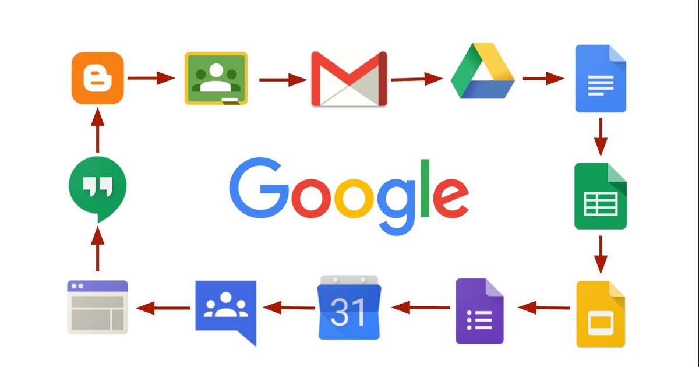

Trabajo colaborativo y flujo de cambios
El control de versiones permite registrar el historial del código, crear ramas para nuevas funciones y revertir cambios problemáticos.
Git es el estándar de facto en desarrollo de software y se integra con servicios como GitHub, GitLab o Bitbucket para colaborar en equipo.
